| 1. Find the N = 5 CA rule that produces the same pattern, under all initial conditions, as this N = 3 rule. Explain your answer. | |
| Here is the solution. | |
| 2. Describe completely the patterns evolving from all initial conditions for both of these rules. Explain your answers. "I ran the program and this is what I saw," is not an adequate explanation. | (a) | (b) |
| Here is the solution. | ||
| 3. Must every CA produced by crossover of of (a) and (b) of problem 2 produce one of the patterns produced by (a) and (b)? Give a reason if you think the answer is "yes," give an example of a CA and the pattern it produces if you think the answer is "no." |
| Here is the solution. |
| 4. For the CA with this rule, explain why two adjacent live cells with at least one dead cell on either side of the pair will stay alive in succeeding generations. Running a CA program and reporting that is what you saw is not sufficient here. Give a reason based on the rule. | 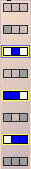 |
| Here is the solution. | |
| 5. Suppose these two CA rules produce CA by crossover but no mutation. (a) Explain why these CA have the property described in problem 4. (b) Give an example of a crossover producing children having the same property. Explain why your crossover does this. (c) Must every example of a crossover produce children having this property? Explain your answer. |
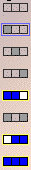 | 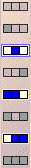 |
| Here is the solution. | ||
| 6. A Garden of Eden state for a CA is a configuration that cannot evolve from any condition under the action of that CA. |
| For example, for the |
| Find a Garden of Eden configuration for the |
| Explain why your configuration is Garden of Eden. |
| Here is the solution. |
| 7. In this problem we use the CA rule shown below. Fill in the patterns evolving from these two initial conditions. Note the live cell in the first generation is in different positions in (a) and (b). | ||
| (a) 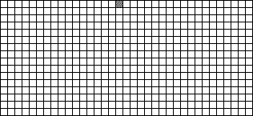 | (b) 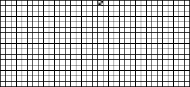 | |
| (c) Now fill in the pattern evolving from this initial condition, the sum of those in parts (a) and (b). | ||
| 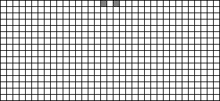 | ||
| (d) Compare the picture in (c) to the superposition of pictures (a) and (b). What pattern do you see? | ||
| Here is the solution. | ||
| 8. Consider the N = 3 CA with this rule: |
| 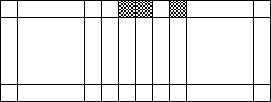 |
| Here is the solution. |
| 9. Consider the N = 3 CA with the rule: |
| Suppose the CA universe consists of 100 cells (with wrap-around) and first generation consists of 24 live cells. How many cells will be alive in the 50th generation? Give a reason supporting your answer. |
| (Hint: run the software for some size universe and some number of live cells in the first generation. You needn't use the precise numbers in this problem in order to find the pattern.) |
| Here is the solution. |
| 10. Suppose in a 1-dimensional CA the nbhd of a cell consists of two cells: the
cell itself and the cell immediately to its right. Suppose only these two configurations
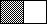 and | ||
| if a cell is alive and its right neighbor is dead, the cell stays alive in the next generation, | ||
| if a cell is dead and its right neighbor is alive, the cell becomes alive in the next generation, and | ||
| in all other circumstances the cell is dead in the next generation. | ||
| If the top row of this graph represents generation 1, fill in generations 2 through 7 using this rule. | ||
| 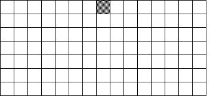 | ||
| Here is the solution. | ||
| 11. For this rule (a) Run the CA program for an initial configuration of a single live cell, two adjacent live cells, three adjacent live cells, and four adjacent live cells. (b) Explain the vertical lines you see in the first case. That is, explain why the lines persist and do not fill in. (c) Is it possible for two adjacent live cells to persist forever? (Considering your result from (a), these two cells cannot be the entire pattern.) Explain your answer. |
|
| Here is the solution. | |
| 12. The nbhd configuration of problem 10 is not one of the choices in the CA program.
Find an |
| Here is the solution. |
| 13. For the CA given by this rule |
| draw the next five generations evolving from the indicated first generation. |
| 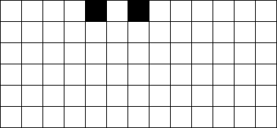 |
| Here is the solution. |
| 14. For the CA given by this rule (a) what pattern evolves from an initial distribution of two adjacent live cells? (b) Add a nbhd config to the rule so the pattern evolving from an initial distribution of two adjacent live cells remains two adjacent live cells. (c) Can any nbhd config be removed from the rule to preserve the result of (b). | |
| Here is the solution. | |
| 15. Find an outer totalistic N=5 rule that generates a pattern like a gasket, from a first generation consisting of a single live cell. |
| Here is the solution. |
| 16. Find an von Neumannn rule that generates a pattern like a gasket, from a first generation consisting of a single live cell. |
| Here is the solution. |
| 17. (a) Can this picture be the first two generations of an N = 3 CA? That is, the first row is the initial configuration, the second row evolves from the first by the CA rule. Find a rule if you think there is one. If you think there is no such rule, say why. |
| 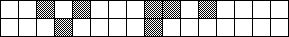 |
| (b) Can this picture be the first two generations of an N = 5 CA? Find a rule if you think there is one. If you think there is no such rule, say why. |
| Here is the solution. |
| 18. (a) Suppose (i) is the first 8 generations of an N = 3 CA. How many different N = 3 CA generate picture (a)? Explain how you found your answer. |
| (b) Can (ii) be the first 8 generations of an N = 3 CA or of an N = 5 CA? Find a rule if you think there is one. If you think there is no such rule, say why. |
| (i) 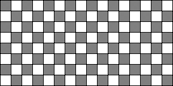 (ii) 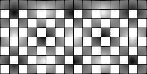 |
| Here is the solution. |
| 19. Consider the N = 3 CA with this rule: DDD and LDL give D, all other nbhd configs give L. Suppose generation 1 contains a singe live cell. How many live cells will generation 100 contain? Assume the state space is large enough that wrap-around does not occur. |
| Here is the solution. |